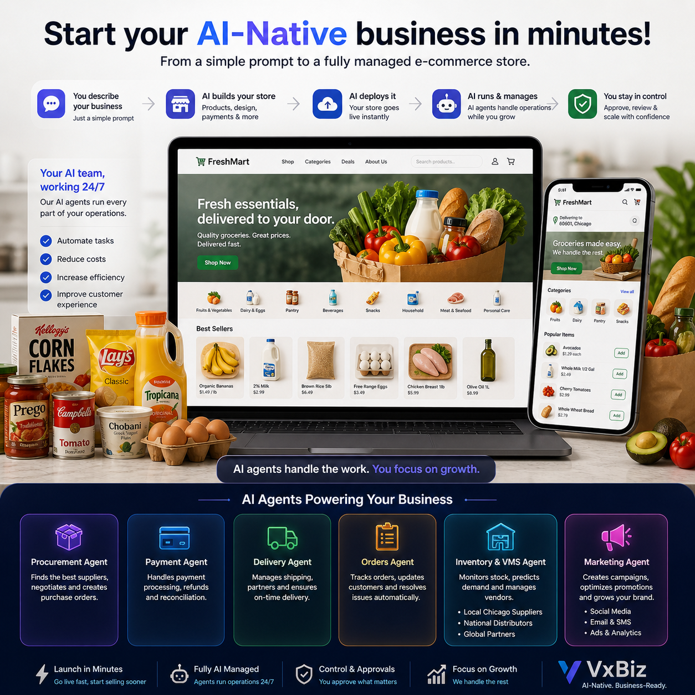

Instant launch
Go from idea to a live store with AI-generated structure, products, pages, and launch workflows.
Describe the business you want to launch. VxBiz creates the store, deploys it, and runs daily operations with AI agents.
From grocery products and suppliers to orders, delivery, payments, inventory, and marketing—your AI operations team keeps the business moving while you approve the actions that matter.

The new way to start selling
Traditional e-commerce forces small businesses to stitch together storefront tools, suppliers, payment systems, delivery apps, and spreadsheets. VxBiz turns that complexity into one AI-managed operating system for your store.
Why VxBiz
Launch like a startup, operate like a larger company, and stay focused on customers instead of back-office work.
Go from idea to a live store with AI-generated structure, products, pages, and launch workflows.
Specialized agents coordinate the repetitive work that usually slows owners down.
Your agents can recommend, prepare, and execute—but important decisions still route through your approval flow.
Grow product lines, campaigns, suppliers, and orders without building a large operations team.
AI Agents
Each agent handles a core business function and works with the others to keep your grocery commerce operation moving.
Discovers suppliers, compares pricing, prepares purchase orders, and routes key decisions for approval.
Supports payment processing, reconciliation, and organized visibility into cash movement.
Coordinates fulfillment, delivery status, and customer-facing tracking updates.
Monitors each order from checkout to completion and keeps customers informed automatically.
Tracks stock levels, monitors supplier performance, and helps prevent costly inventory gaps.
Creates promotions, launches campaigns, and helps grow demand across your customer base.
How it works
Tell VxBiz what you want to sell, who you serve, and how you want to operate.
VxBiz generates and deploys your e-commerce experience with operational workflows included.
Agents handle the moving parts while you review and approve important decisions.
Ready to see it?
Experience how VxBiz can create, deploy, and manage a commerce business from one prompt.
Try the Demo